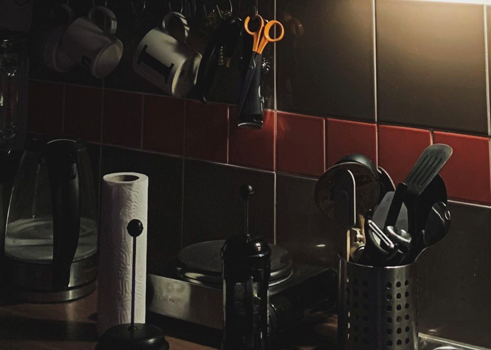

Accommodation
Surely, accommodation is very important. However, remember that you will not spend too much time
in it.
You will come to the new location to see new things (outside), not someone’s property.
Booking
Booking: find great hotel or apartment deals
and book in just a few minutes. Just put your destination,
dates,
and number of
guests, filter the price range, and find the best option for yourself. For most offers,
the
free
cancelation is available (till the very date of the arrival or a bit earlier).
All the options have detailed descriptions and list of what is provided and not provided. Don't
forget
to check the
reviews! You will find a lot of useful information there.
Once you book an accommodation, you will be able to chat directly with the property in the app or on
the
website to
clarify all your questions and concerns.
Booking also has a flexible system of discounts for regular customers.
Personally, I use Booking to search for cheap hostels. The significant point for me is the provision
of
the towel,
as I usually don't bring mine (because I travel only with a backpack which can't accommodate a lot).
If
the hostel
provides breakfast, it's also good and lucky but not a must-be point.

Airbnb
Airbnb: millions of Hosts on Airbnb invite
people from everywhere to live, work, and rest.
The concept of Airbnb is that people rent out their apartments, houses, rooms. Despite this, you
will
see some
variants of hostels and hotels as well.
What I love about Airbnb is the ability to directly contact the owner of the property. Most of them
reply quite fast
and are eager to help you.
No fraud can go through the process of verification, so there is nothing to be worried about.
Put your destinations, dates, and number of guests and search for the most suitable variant for you.
Once you press
"reserve" to reserve the accommodation, your reservation also must be approved by the owner of the
property. This
process takes not more than 24 hours. If the reservation is not approved within this time frame,
it's
automatically
canceled.
Personally, I use it to search for not the hostels or hotels, but apartments or rooms. I find this
option a bit more
expensive than Booking, so it's more suitable if you travel with a friend or even some friends.
Couchsurfing
CouchSurfing: you have friends around
the world, you just haven’t met them yet. Couchsurfing is the best way to
stay
with locals,
make lifelong travel friends, or host travelers coming to your hometown. It's not just a phrase.
Browse the millions of local hosts offering a place to stay in thousands of cities around the globe.
And
yes,
completely free.
Please, note Couchsurfing is not only about accommodation. It's about useful networking. If you take
something, give
something back. If someone hosts you in their city, let someone else sleep over at yours in your
city or
bring
something (related specifically to your departure country).
You can use Couchsurfing to search for not only accommodation but people who are nearby and ready to
hang out with
you if you travel alone (and feel lonely).
Don't be shy, ask whatever you are curious or worried about, specify all the features and
requirements
of the host.
Some people will be eager to show you the city, some will just let you stay even without talking to
you.
Some people
prefer being naked in their house, some people don't. All people are different, remember it and
specify
all these
details before your arrival.
To be honest, I used Couchsurfing only once. But I have friends who use it regularly, save a lot of
money by that,
and at the same time make new friends around the world. My first experience was amazing, and I
definitely will use
Couchsurfing again.
Epilogue
A small tip: rely on the reviews. These people were in your shoes and went through the same
experience.
They can
tell you all the advantages and disadvantages of the specific place to stay. Of course, any
accommodation can and
will have negative reviews because people tend to leave their negative emotions. Just consider all
the
pros and cons
and make your decision relying on that. (E.g., if the description of the hostel says that they
provide
breakfast and
you see some reviews that it’s not true indeed and it was an important point for you, think twice
before
making your
choice).